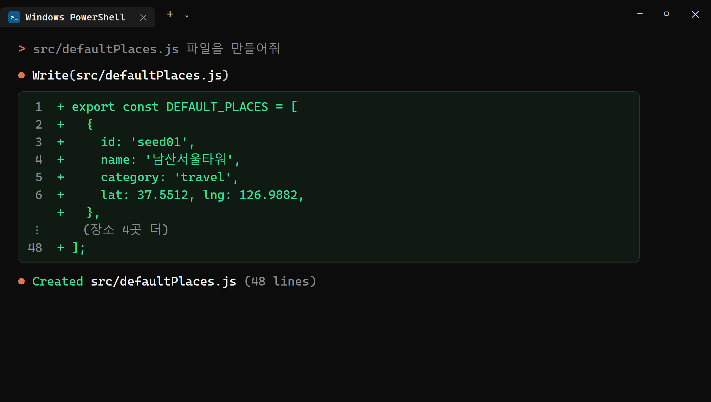
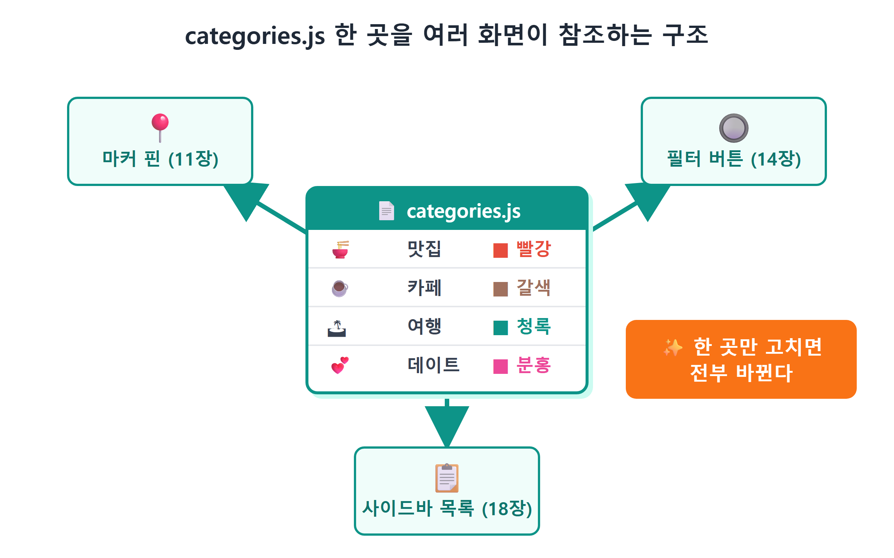
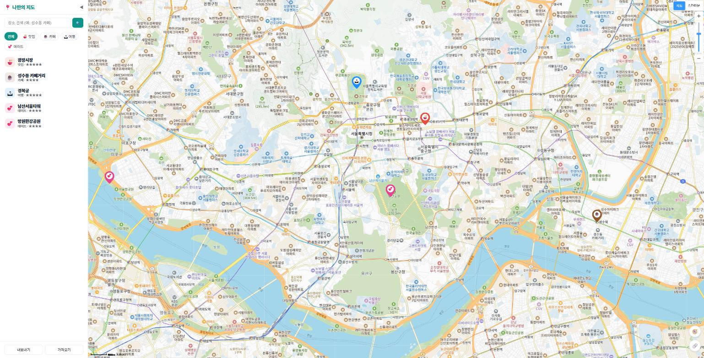
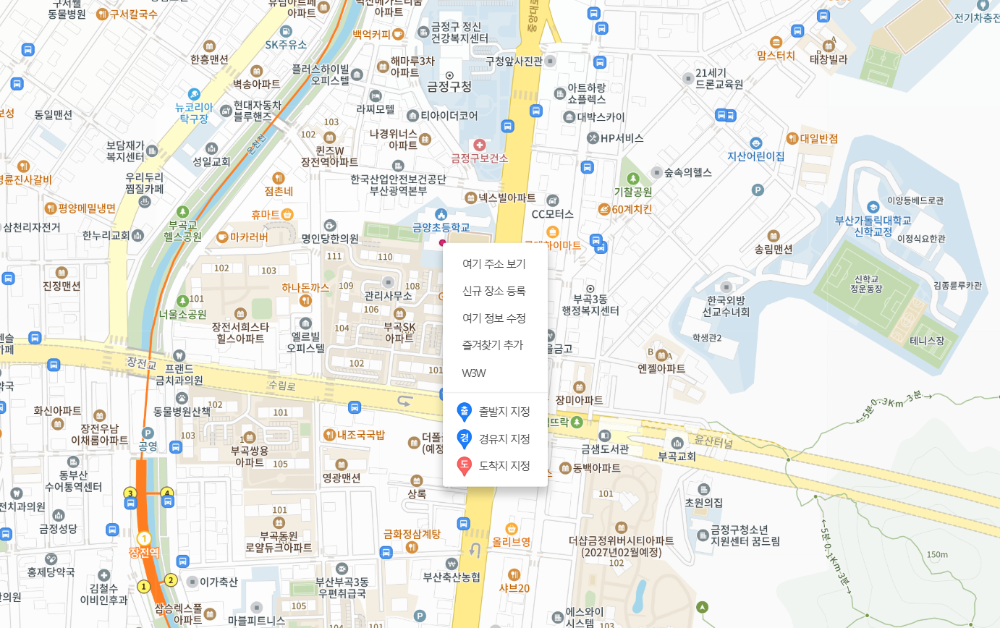
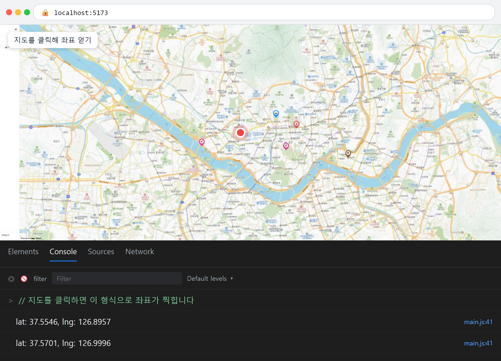

12장 장소 데이터 설계¶
이 장에서 배우는 것
- "데이터와 화면을 분리한다"는 프로그래밍의 대원칙을 이해합니다
- 장소 하나를 표현하는 객체 스키마(id·name·category·lat·lng·rating·memo)를 설계합니다
- 예시 장소 데이터 파일
defaultPlaces.js와 카테고리 정의 파일categories.js를 만듭니다 - 데이터 배열을 받아 마커를 찍어 주는 렌더링 함수
renderPlaces를 만듭니다 - 지도에 올릴 장소의 위도·경도 좌표를 직접 구하는 두 가지 방법을 배웁니다
11장에서 우리는 지도 위에 마커를 찍는 법을 배웠습니다. 카테고리 색깔의 SVG 핀까지 만들었으니 겉모습은 제법 그럴듯합니다. 그런데 지금 우리 코드를 솔직하게 들여다보면, 조금 부끄러운 구석이 있습니다. 마커의 좌표와 이름이 코드 여기저기에 직접 박혀 있다는 점입니다. 장소를 하나 추가하려면 코드 한복판을 열어 마커 생성 코드를 통째로 복사해 붙여야 하죠.
장소가 세 개일 때는 그래도 참을 만합니다. 하지만 우리가 만드는 앱은 맛집·카페·여행지·데이트 코스를 계속 쌓아 가는 "나만의 지도"입니다. 장소가 서른 개, 백 개가 되면 어떨까요? 별점을 저장하고 싶어지면? 카테고리별로 필터링하고 싶어지면? 그때마다 마커 생성 코드를 복사해 붙이는 방식으로는 버틸 수 없습니다.
이번 장에서 우리는 앱의 뼈대 설계를 합니다. 화면에 보이는 것(마커)과 화면 뒤의 알맹이(장소 데이터)를 깔끔하게 갈라놓는 작업입니다. 새 코드를 왕창 쓰는 장은 아니지만, 이 책 후반부 전체가 이번 장에서 세운 구조 위에 올라갑니다. 14장의 필터도, 17장의 저장도, 18장의 목록도 전부 오늘 만드는 데이터 구조를 재료로 쓰거든요. 건물로 치면 철근을 배근하는 날입니다. 겉보기 변화는 작아도 가장 중요한 날이죠.
12.1 데이터와 화면 분리 — 요리사와 레시피¶
먼저 개념부터 잡겠습니다. "데이터와 화면을 분리한다"는 게 무슨 뜻일까요?
식당 주방을 떠올려 보세요. 요리사는 요리하는 방법을 압니다. 재료를 썰고, 볶고, 접시에 담는 기술이죠. 하지만 "오늘 뭘 만들지"는 요리사의 머릿속이 아니라 주문서에 적혀 있습니다. 주문서가 김치찌개면 김치찌개를, 된장찌개면 된장찌개를 만듭니다. 요리사(방법)와 주문서(내용)가 분리되어 있기 때문에, 신메뉴가 나와도 요리사를 새로 뽑을 필요가 없습니다. 주문서만 바뀌면 됩니다.
프로그램도 똑같이 만들 수 있습니다.
- 데이터 = 주문서. "광장시장, 맛집, 위도 37.5701, 경도 126.9996, 별 5개" 같은 순수한 정보 목록입니다. 지도가 뭔지, 마커가 뭔지 전혀 모릅니다.
- 화면 그리는 코드 = 요리사. 장소 목록을 받아서 "장소 하나당 마커 하나"를 찍는 방법만 압니다. 목록에 뭐가 들어 있는지는 신경 쓰지 않습니다.
그림 12.1 — 데이터와 화면의 분리
이렇게 갈라놓으면 무엇이 좋을까요? 첫째, 장소 추가가 쉬워집니다. 코드를 건드리지 않고 데이터 목록에 한 줄만 보태면 마커가 하나 늘어납니다. 둘째, 기능 확장이 쉬워집니다. 같은 데이터 목록을 사이드바 목록에도, 검색에도, 저장에도 재사용할 수 있습니다. 마커용 데이터 따로, 목록용 데이터 따로 관리하는 악몽을 피할 수 있죠. 셋째, 고장이 줄어듭니다. 데이터에 오타가 나면 데이터 파일만 보면 되고, 마커가 이상하게 그려지면 그리는 함수만 보면 됩니다. 문제의 범인이 숨을 곳이 절반으로 줄어듭니다.
이 원칙은 카카오지도만의 이야기가 아닙니다. 엑셀과 차트, 데이터베이스와 웹페이지, 유튜브 서버와 유튜브 앱 — 세상의 거의 모든 소프트웨어가 이 구조로 만들어져 있습니다. 오늘 이 감각을 몸에 익히면, 나중에 어떤 프레임워크를 배우든 훨씬 수월해집니다.
💡 팁
이 구조에는 "단방향 흐름"이라는 별명도 있습니다. 데이터가 바뀌면 → 화면을 다시 그린다. 항상 이 한 방향으로만 흐르게 만드는 겁니다. 화면 여기저기서 마커를 직접 만들고 지우기 시작하면 "데이터에는 5개인데 화면에는 6개"처럼 데이터와 화면이 어긋나는 버그가 생깁니다. 리액트(React) 같은 유명 프레임워크의 핵심 철학도 결국 이것입니다.
12.2 장소 스키마 설계 — 장소 하나를 어떻게 표현할까¶
분리하기로 마음먹었으니, 이제 데이터의 생김새를 정해야 합니다. "장소 하나"를 자바스크립트 객체로 표현한다면 어떤 칸이 필요할까요? 이렇게 데이터의 구조를 미리 약속하는 것을 스키마(schema)1라고 부릅니다.
우리 앱의 완성 모습을 떠올리며 필요한 칸을 역산해 봅시다. 지도에 마커를 찍으려면 좌표가 필요합니다. 말풍선과 목록에 보여줄 이름도 필요하고, 필터링하려면 카테고리, 상세 패널에는 별점과 메모가 필요합니다. 그리고 눈에 보이지는 않지만 아주 중요한 칸이 하나 더 있습니다. 바로 id입니다. 정리하면 표 12.1과 같습니다.
표 12.1 — 장소 객체 스키마
| 칸(속성) | 타입 | 예시 | 하는 일 |
|---|---|---|---|
id |
문자열 | 'seed01' |
장소를 유일하게 식별하는 번호표 |
name |
문자열 | '광장시장' |
화면에 보여줄 이름 |
category |
문자열 | 'food' |
분류. food/cafe/travel/date 중 하나 |
lat |
숫자 | 37.5701 |
위도 (남북 위치) |
lng |
숫자 | 126.9996 |
경도 (동서 위치) |
rating |
숫자 | 5 |
별점 1~5 |
memo |
문자열 | '빈대떡과 마약김밥...' |
자유 메모 |
몇 가지 설계 결정에는 이유가 있습니다. 하나씩 짚어 보겠습니다.
왜 id가 필요할까요? 이름으로 구분하면 안 될까요? 안 됩니다. "스타벅스"라는 장소를 두 곳 저장하는 순간 이름은 더 이상 유일하지 않습니다. 나중에 "이 장소를 삭제해줘", "이 장소의 별점을 바꿔줘"라고 할 때, 프로그램은 정확히 어느 장소인지 집어낼 수 있는 번호표가 필요합니다. 주민등록번호가 동명이인 문제를 해결하는 것과 같은 원리입니다. 16장에서 장소를 직접 추가할 때 id를 자동 생성하는 기법도 배웁니다.
왜 category는 '맛집'이 아니라 'food'일까요? 화면에 보이는 한글 이름과 프로그램 내부에서 쓰는 식별자를 분리한 것입니다. 내부 식별자를 영문 소문자로 고정해 두면, 나중에 "맛집"을 "먹거리"로 표시를 바꾸고 싶을 때 데이터는 한 글자도 손대지 않고 표시용 이름만 바꾸면 됩니다. 이 표시용 이름이 어디 사는지는 잠시 뒤 12.4절에서 보게 됩니다.
왜 lat·lng는 따옴표 없는 숫자일까요? 좌표는 계산에 쓰이기 때문입니다. kakao.maps.LatLng는 숫자를 기대하고, 나중에 거리 계산 같은 걸 하게 되면 문자열 '37.5701'은 골칫거리가 됩니다. 숫자는 숫자로 저장한다 — 데이터 설계의 기본기입니다.
⚠️ 주의
위도(lat)와 경도(lng)의 순서를 헷갈리는 실수가 정말 많습니다. 한국(서울 기준)이라면 위도는 33~38 근처, 경도는 126~129 근처입니다. 마커가 지도에 안 보이고 엉뚱한 바다 위에 찍혀 있다면 십중팔구 두 숫자가 뒤바뀐 겁니다. "위도 37, 경도 127 — 서울"을 주문처럼 외워 두세요.
12.3 defaultPlaces.js — 예시 장소 다섯 곳¶
스키마를 정했으니 실제 데이터 파일을 만들 차례입니다. 처음 실행한 사용자에게 텅 빈 지도를 보여주는 것보다, 예시 장소 몇 개가 미리 찍혀 있는 편이 훨씬 친절하겠죠. Claude Code에게 시켜 봅시다.
🗣 이렇게 시키세요
src/defaultPlaces.js 파일을 만들어줘. 처음 실행할 때 보여줄 예시 장소 5개를 배열로 export 해줘. 각 장소는 id, name, category, lat, lng, rating, memo 속성을 가진 객체야. category는 food/cafe/travel/date 중 하나로 하고, 서울의 유명한 장소들로 채워줘. 좌표는 실제 위치와 맞게.
Claude Code가 만들어 준 src/defaultPlaces.js입니다.
// 처음 실행할 때 보여줄 예시 장소들 (서울 유명 스팟)
export const DEFAULT_PLACES = [
{
id: 'seed01',
name: '광장시장',
category: 'food',
lat: 37.5701,
lng: 126.9996,
rating: 5,
memo: '빈대떡과 마약김밥. 주말엔 사람이 아주 많다.',
},
{
id: 'seed02',
name: '성수동 카페거리',
category: 'cafe',
lat: 37.5446,
lng: 127.0562,
rating: 4,
memo: '공장 개조 카페 투어. 평일 오후 추천.',
},
{
id: 'seed03',
name: '경복궁',
category: 'travel',
lat: 37.5796,
lng: 126.977,
rating: 5,
memo: '한복 입으면 무료 입장. 수문장 교대식 10시/14시.',
},
{
id: 'seed04',
name: '남산서울타워',
category: 'date',
lat: 37.5512,
lng: 126.9882,
rating: 4,
memo: '야경 명소. 케이블카 타고 올라가기.',
},
{
id: 'seed05',
name: '망원한강공원',
category: 'date',
lat: 37.5546,
lng: 126.8957,
rating: 4,
memo: '라면 끓여 먹기 좋은 곳. 노을이 예쁘다.',
},
];
같이 읽어 봅시다. 파일 전체가 하는 일은 단 하나, 객체 5개가 든 배열을 DEFAULT_PLACES라는 이름으로 내보내는 것입니다. export const는 8장에서 배운 모듈 문법 그대로입니다. 다른 파일에서 import { DEFAULT_PLACES } from './defaultPlaces.js' 한 줄이면 이 목록을 가져다 쓸 수 있습니다.
객체 하나하나는 정확히 표 12.1의 스키마를 따릅니다. id는 seed01부터 seed05까지 — "seed"는 씨앗이라는 뜻으로, 프로그램에 미리 심어 두는 초기 데이터를 개발자들이 흔히 시드 데이터라고 부르기 때문에 붙인 이름입니다. 나중에 사용자가 직접 추가하는 장소는 다른 방식의 id를 갖게 되므로, "seed로 시작하면 예시 데이터구나" 하고 구분하기도 좋습니다.

그림 12.2 — Claude Code가 defaultPlaces.js를 생성한 모습
여기서 눈여겨볼 점이 하나 있습니다. 이 파일에는 지도 코드가 한 줄도 없습니다. kakao라는 단어도, Marker라는 단어도 등장하지 않죠. 순수한 정보만 담겨 있어서, 극단적으로 말하면 카카오지도를 네이버지도로 갈아타도 이 파일은 그대로 재사용할 수 있습니다. 이것이 12.1절에서 말한 분리의 힘입니다.
💡 팁
목차에서 이 장의 이름이 "places.json"이었던 걸 기억하는 분이 있을지 모르겠습니다. 데이터 목록은 .json 파일로도 만들 수 있는데, 우리는 .js 모듈을 골랐습니다. 이유는 두 가지입니다. ① .js는 import 한 줄로 불러올 수 있지만 .json은 별도의 불러오기 처리가 필요하고, ② .js에는 지금 보는 것처럼 주석을 달 수 있습니다(JSON은 주석 금지!). 다만 JSON이라는 형식 자체는 17장(localStorage 저장·내보내기)에서 주인공으로 다시 등장하니 이름만 기억해 두세요.
12.4 categories.js — 카테고리는 한 곳에서만¶
데이터 파일에서 category를 'food' 같은 영문 식별자로 저장했습니다. 그런데 화면에는 "🍜 맛집"이라고 보여줘야 하고, 11장에서 만든 SVG 핀에는 카테고리마다 다른 색을 칠해야 합니다. 즉 카테고리마다 한글 이름, 이모지, 색상 세 가지 정보가 따라다닙니다.
이 정보를 마커 코드에 한 벌, 필터 버튼 코드에 한 벌, 목록 코드에 한 벌씩 흩어 놓으면 어떻게 될까요? 나중에 "여행 카테고리 색을 초록으로 바꿔줘"라고 했을 때 세 군데를 전부 고쳐야 하고, 하나라도 빠뜨리면 마커는 파란색인데 버튼은 초록색인 앱이 됩니다. 그래서 프로그래머들은 오랜 격언을 따릅니다. "같은 정보는 한 곳에만 둔다."2
🗣 이렇게 시키세요
src/categories.js 파일을 만들어줘. food/cafe/travel/date 네 카테고리의 한글 이름, 이모지, 색상을 객체 하나에 모아서 export 하고, 카테고리 id를 넣으면 그 정보를 돌려주는 categoryOf 함수도 만들어줘. 목록에 없는 id가 들어오면 '기타'로 처리해줘.
Claude Code가 만들어 준 src/categories.js입니다. 짧지만 알찬 파일입니다.
// 카테고리 정의 — 지도 전체에서 이 한 곳만 고치면 된다.
export const CATEGORIES = {
food: { label: '맛집', emoji: '🍜', color: '#e74c3c' },
cafe: { label: '카페', emoji: '☕', color: '#8e5a2d' },
travel: { label: '여행', emoji: '🏝', color: '#1e90ff' },
date: { label: '데이트', emoji: '💕', color: '#e84393' },
};
export function categoryOf(id) {
return CATEGORIES[id] ?? { label: '기타', emoji: '📍', color: '#555' };
}
CATEGORIES는 "객체 안에 객체"가 든 구조입니다. 바깥 객체의 키는 카테고리 id(food, cafe...)이고, 값은 표시 정보 묶음(label·emoji·color)입니다. CATEGORIES['food'].color처럼 꺼내 쓰면 '#e74c3c'(빨강)가 나옵니다. 색상값은 8장에서 스쳐 지나간 16진수 색상 코드입니다.
categoryOf 함수의 ??는 처음 보는 기호일 텐데, 널 병합 연산자라고 읽습니다. "왼쪽 값이 있으면 왼쪽을, 없으면(undefined나 null이면) 오른쪽을 써라"라는 뜻입니다. 데이터에 오타가 나서 category: 'fodo' 같은 엉뚱한 값이 들어와도, 앱이 죽는 대신 회색 📍 "기타" 핀으로 안전하게 표시됩니다. 이렇게 잘못된 입력이 와도 무너지지 않게 받쳐 주는 안전망을 폴백(fallback)이라고 부릅니다. 좋은 코드의 조용한 미덕이죠.

그림 12.3 — categories.js 한 곳을 여러 화면이 참조하는 구조
11장에서 만든 markerImageFor 함수를 다시 떠올려 보세요. SVG 핀의 색과 이모지를 이 파일에서 가져다 썼습니다(const { emoji, color } = categoryOf(category)). 14장의 필터 버튼도, 18장의 목록도 전부 이 파일 하나를 바라보게 됩니다. 언젠가 "🏕 캠핑" 카테고리를 추가하고 싶어지면? CATEGORIES에 한 줄만 넣으면 마커·버튼·목록이 한꺼번에 캠핑을 알게 됩니다.
12.5 데이터를 화면으로 — renderPlaces 함수¶
주문서(데이터)가 준비됐으니 요리사(렌더링 함수)를 만들 차례입니다. 목표는 명확합니다. 장소 배열을 받아서, 장소 하나당 마커 하나를 찍는 함수.
🗣 이렇게 시키세요
mapView.js에 renderPlaces 함수를 만들어줘. 장소 배열을 받아서 각 장소마다 11장에서 만든 markerImageFor로 카테고리 핀 마커를 찍어줘. 다시 호출하면 기존 마커를 싹 지우고 새로 그리도록 해줘. 그리고 main.js에서 DEFAULT_PLACES를 import 해서 renderPlaces로 그리게 연결해줘.
Claude Code가 src/mapView.js에 추가한 코드입니다. (실제 앱의 완성본에는 말풍선과 클러스터러 코드가 더 붙어 있는데, 그건 13장과 22장에서 배울 내용이라 이 장의 진도에 맞게 걷어낸 모습으로 보여 드립니다.)
import { categoryOf } from './categories.js';
let markers = []; // 지금 지도 위에 떠 있는 마커들
export function renderPlaces(map, places) {
// 1) 기존 마커를 전부 지도에서 내린다
for (const m of markers) m.setMap(null);
markers = [];
// 2) 데이터 한 건당 마커 하나씩 새로 찍는다
for (const place of places) {
const marker = new kakao.maps.Marker({
map,
position: new kakao.maps.LatLng(place.lat, place.lng),
image: markerImageFor(place.category),
title: place.name,
});
markers.push(marker);
}
}
그리고 main.js에서 연결합니다.
import { DEFAULT_PLACES } from './defaultPlaces.js';
import { renderPlaces } from './mapView.js';
// ... 지도 생성 코드 아래에 ...
renderPlaces(map, DEFAULT_PLACES);
함수의 동작을 순서대로 따라가 봅시다.
1단계 — 싹 지우기. 함수는 그리기 전에 먼저 markers 배열에 들어 있던 기존 마커를 전부 setMap(null)로 내립니다. 왜 지우고 시작할까요? 이 함수는 앞으로 여러 번 불리기 때문입니다. 14장에서 "카페" 필터를 누르면 카페만 남긴 배열로 renderPlaces를 다시 부르고, 16장에서 장소를 추가하면 한 건 늘어난 배열로 또 부릅니다. 지우지 않고 그리기만 하면 부를 때마다 마커가 겹겹이 쌓여서, 필터를 눌러도 이전 마커가 유령처럼 남아 있게 됩니다. "항상 전부 지우고, 현재 데이터 그대로 다시 그린다" — 단순 무식해 보여도, 데이터와 화면이 절대 어긋나지 않게 보장하는 가장 확실한 방법입니다.
2단계 — 데이터만큼 반복. for...of 반복문이 배열을 한 바퀴 돌며 장소마다 마커를 만듭니다. 11장에서 배열과 반복문으로 마커 여러 개를 찍던 코드와 골격이 같은데, 결정적 차이가 하나 있습니다. 반복문 안 어디에도 '광장시장'이나 37.5701 같은 구체적인 값이 없다는 점입니다. 전부 place.name, place.lat처럼 데이터에서 꺼내 옵니다. 이 함수는 장소가 5개든 500개든, 서울이든 제주든 전혀 상관하지 않습니다. 요리사는 주문서를 읽을 뿐입니다.
만든 마커를 markers.push(marker)로 배열에 챙겨 두는 것도 잊지 않았습니다. 다음번에 지우려면 손잡이를 쥐고 있어야 하니까요.
이제 저장하고 브라우저를 확인해 봅시다. 개발 서버(npm run dev)가 켜져 있다면 저장하는 순간 화면이 갱신됩니다.

그림 12.4 — DEFAULT_PLACES 다섯 곳이 카테고리 핀으로 찍힌 지도
서울 지도 위에 다섯 가지 핀이 색색으로 찍혀 있다면 성공입니다. 겉보기에는 11장의 결과와 비슷해 보여도, 속은 완전히 다른 앱이 됐습니다. 시험 삼아 defaultPlaces.js에 여러분의 단골 가게를 한 객체 추가하고 저장해 보세요. 지도 코드는 한 글자도 안 건드렸는데 마커가 하나 늘어납니다. 이 순간의 편안함이 바로 데이터와 화면을 분리한 보상입니다.
12.6 좌표는 어떻게 구할까¶
방금 "단골 가게를 추가해 보세요"라고 했는데, 아마 손이 멈췄을 겁니다. 우리 가게의 위도·경도를 어떻게 알아내죠? 좌표 구하는 방법 두 가지를 소개합니다.
방법 1 — 카카오맵에서 우클릭. 브라우저에서 카카오맵(map.kakao.com)을 열고, 원하는 지점을 찾아 마우스 오른쪽 버튼을 눌러 보세요. 작은 메뉴가 나타나는데, 여기서 클릭한 지점의 주소를 확인할 수 있습니다(길찾기 출발지·도착지로 지정하는 메뉴도 함께 보입니다). 장소 이름과 주소를 정확히 알아 두는 것만으로도 절반은 해결입니다. 15장에서 키워드 검색을 배우면 이름만으로 좌표까지 자동으로 받아 오게 되거든요.

그림 12.5 — 카카오맵에서 우클릭으로 지점 정보 확인
방법 2 — 우리 지도를 좌표 자판기로 쓰기. 더 개발자다운 방법입니다. 10장 미니 실습에서 지도를 클릭하면 콘솔에 좌표를 찍는 코드를 만들었던 것, 기억하시나요? 바로 그 코드가 오늘을 위한 복선이었습니다. 혹시 지워 버렸다면 Claude Code에게 다시 부탁하면 됩니다.
🗣 이렇게 시키세요
지도를 클릭하면 클릭한 지점의 위도와 경도를 콘솔에 찍어줘. defaultPlaces.js에 바로 복사해 넣기 좋게 lat: 숫자, lng: 숫자 형식으로 출력해줘.
앱을 띄우고 F12로 개발자 도구 콘솔을 연 다음, 지도에서 원하는 지점을 클릭해 보세요. 콘솔에 lat: 37.5546, lng: 126.8957 같은 좌표가 찍힙니다. 지도를 확대(레벨을 낮게)할수록 클릭 지점이 정밀해지니, 건물 하나를 정확히 찍고 싶다면 최대한 확대한 뒤 클릭하세요. 찍힌 좌표를 그대로 복사해 defaultPlaces.js의 새 객체에 붙여 넣으면 끝입니다.

그림 12.6 — 지도 클릭으로 콘솔에 좌표 찍기
이 클릭 좌표 얻기는 16장에서 "지도를 클릭하면 그 자리에 장소 추가" 기능으로 승격됩니다. 지금은 콘솔에 찍기만 하지만, 곧 클릭 한 번으로 입력 폼이 열리는 앱이 될 겁니다.
💡 팁
좌표는 소수점 4자리(약 10m 오차)면 마커 찍기에 충분합니다. 콘솔에 37.55461283...처럼 길게 나와도 앞 4~5자리까지만 옮겨 적어도 됩니다. 물론 통째로 복사해 붙여도 아무 문제 없습니다.
12.7 마무리¶
이번 장은 화면의 변화보다 구조의 변화가 큰 장이었습니다. 장소 정보는 defaultPlaces.js에, 카테고리 정의는 categories.js에, 그리는 방법은 renderPlaces에 — 각자의 자리가 정해졌습니다. 다음 장부터는 이 구조 위에 기능을 차곡차곡 올립니다.
📌 핵심 요약
- 데이터와 화면을 분리하면 장소 추가·기능 확장·버그 수정이 모두 쉬워집니다. 흐름은 항상 "데이터 → 화면" 단방향입니다.
- 장소 하나는
id·name·category·lat·lng·rating·memo일곱 칸의 객체(스키마)로 표현합니다.id는 이름 중복 문제를 해결하는 유일한 번호표입니다. - 예시 데이터는
defaultPlaces.js에 배열로 담아 export 합니다. 순수한 정보만 있고 지도 코드는 없습니다. - 카테고리의 한글 이름·이모지·색상은
categories.js한 곳에만 둡니다.categoryOf의??(널 병합 연산자)는 모르는 카테고리를 "기타"로 받아 주는 폴백입니다. renderPlaces는 기존 마커를 전부 지우고, 현재 데이터대로 다시 그립니다. 이 함수는 필터·추가·삭제 때마다 재사용됩니다.- 좌표는 카카오맵 우클릭으로 지점을 확인하거나, 우리 지도의 클릭 이벤트로 콘솔에 찍어 구합니다.
🤔 생각해보기
Q1. 장소 스키마에 여러분만의 칸을 하나 추가한다면 무엇을 넣고 싶나요? (예: 방문 날짜, 같이 간 사람, 사진 주소...) 그 칸의 이름과 타입을 스키마 표처럼 적어 보세요.
✍️ ________
✍️ ________
Q2. renderPlaces가 기존 마커를 지우지 않고 그리기만 한다면, "카페 필터 → 전체 필터"를 눌렀을 때 화면에 정확히 어떤 문제가 생길까요?
✍️ ________
✍️ ________
✏️ 연습 문제
defaultPlaces.js에 여러분이 실제로 좋아하는 장소를 2개 추가해 보세요. 좌표는 12.6절의 두 방법 중 하나로 직접 구하고, 저장 후 지도에 새 핀이 나타나는지 확인하세요.categories.js에 다섯 번째 카테고리(예:camping: { label: '캠핑', emoji: '🏕', color: '#27ae60' })를 추가하고, 그 카테고리의 장소를 하나 만들어 초록 핀이 찍히는지 확인해 보세요.defaultPlaces.js에서 장소 하나의 category를 일부러'fodo'로 틀리게 바꿔 보세요. 앱이 죽지 않고 회색 📍 핀이 나타나는 이유를categoryOf함수에서 찾아 한 문장으로 설명해 보세요.
🔎 더 찾아보기
JSON— 데이터를 텍스트로 주고받는 표준 형식. 17장에서 저장·내보내기의 주인공으로 등장합니다단일 진실 공급원(Single Source of Truth)— "같은 정보는 한 곳에만"의 정식 명칭. 소프트웨어 설계의 핵심 원칙Array.prototype.map— 배열을 다른 배열로 변환하는 메서드. 데이터→화면 변환의 단짝 도구GeoJSON— 지리 데이터를 표현하는 국제 표준 JSON 형식. 우리 스키마의 어른 버전
다음 장 예고 — 마커를 클릭해도 아직 아무 일도 일어나지 않습니다. 13장에서는 마커를 클릭하면 장소 이름과 별점이 담긴 말풍선이 뜨게 만듭니다. 카카오가 기본 제공하는 인포윈도우 대신, HTML과 CSS로 마음껏 꾸밀 수 있는 커스텀 오버레이로 우리만의 말풍선을 디자인합니다. 말풍선 꼬리를 CSS로 그리는 재미있는 트릭도 기다리고 있습니다.